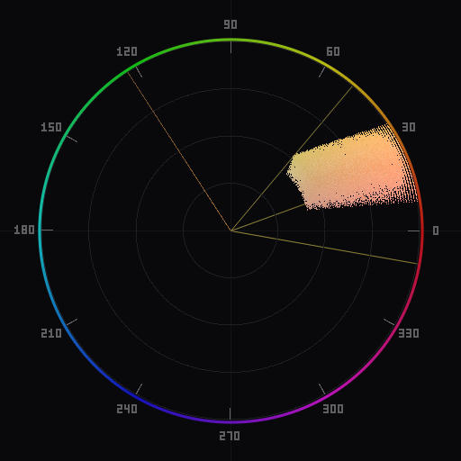

Understanding Color Harmony in Photography
How complementary, triadic, and analogous color schemes work, why they matter for photographic composition and grading, and how to verify them on a vectorscope.
What is color harmony
Color harmony refers to specific combinations of hues that produce a sense of visual coherence when used together. These combinations are not arbitrary aesthetic preferences. They are geometric relationships on the color wheel—pairs, triads, and adjacent groups that have been studied and applied in painting, design, and film for centuries.
In photography, color harmony matters for two reasons. First, it affects how a viewer perceives an image. An image whose dominant colors fall into a recognized harmonic pattern tends to feel balanced, intentional, and visually comfortable. An image with randomly distributed hues can feel chaotic or unresolved. Second, harmony gives you a framework for making deliberate grading decisions. Instead of moving sliders until something "looks right," you can target a specific harmonic relationship and verify it objectively.
If you are new to vectorscopes, read What Is a Vectorscope first. The harmony concepts below are easiest to understand when you can visualize them as positions on the circular scope plot.
Complementary colors
Two colors are complementary when they sit on opposite sides of the color wheel, 180 degrees apart. On a vectorscope, a complementary palette appears as two clusters on opposite ends of a diameter line through the center.
The most widely used complementary scheme in photography and cinema is teal and orange. Warm skin tones and amber highlights concentrate in the orange region of the scope, while cooled shadows and blue-green elements concentrate in the teal region directly opposite. This pairing works because it creates maximum hue contrast while keeping the palette to just two color families, which reads as simple and visually organized.
Other complementary pairs that appear frequently in photography:
- Blue and yellow. Common in landscape photography—blue sky above, golden field or sand below. On the vectorscope, you see one cluster near the blue target and another near yellow, forming a near-vertical line through center.
- Red and cyan. Less common in nature but used in stylized portraiture and fashion. The high contrast between warm red and cool cyan creates a striking, high-energy look.
- Green and magenta. Appears in garden scenes with magenta flowers against green foliage, or in neon-lit urban photography.
Complementary schemes are high-contrast by nature. They draw the eye and create visual tension. If your image feels flat despite having good exposure and composition, checking whether you can push the existing colors toward a complementary pair is often an effective grading strategy.
Triadic harmony

A triadic scheme uses three colors spaced 120 degrees apart on the wheel. On the vectorscope, this produces three clusters arranged in an equilateral triangle around the center.
Triadic harmony is less common in photography than complementary pairing, because it is harder to find or create three distinct, equally-spaced hue families in a natural scene. But it appears more often than you might expect:
- Red, green, blue. The primary triad. Street photography in urban settings often captures this naturally—a red sign, green vegetation, blue sky or blue-painted wall. Each color occupies its own region of the scope at roughly 120-degree intervals.
- Cyan, magenta, yellow. The secondary triad. Sunrise or sunset scenes with warm yellow light, magenta clouds, and cyan sky approaching the zenith can produce this pattern.
- Rotated triads. Any three hues at equal spacing count. A scene dominated by teal, warm orange, and violet is a rotated triad, and it produces the same equilateral triangle on the scope, just at a different orientation.
Triadic palettes feel lively and colorful but balanced. The equal spacing ensures no single color dominates unless you choose to weight one more heavily through saturation or area. In practice, most successful triadic images have one dominant color and use the other two as accents. On the vectorscope, this shows up as one large cluster and two smaller ones.
When grading toward a triadic palette, be careful not to over-saturate the accent colors. The vectorscope helps here: you can see exactly how far each cluster extends from center and adjust the relative saturation of each hue family through HSL controls.
Analogous harmony

An analogous scheme uses colors that sit next to each other on the color wheel, typically spanning 30 to 60 degrees of hue angle. On the vectorscope, this produces a cluster or arc in one region rather than dots scattered around the circle.
Analogous palettes are the most common harmonic pattern in photography, because they occur naturally in many scenes:
- Golden hour landscapes. The warm light shifts everything toward a red-orange-yellow range. On the scope, you see a single arc in the warm region with no significant clusters elsewhere.
- Forest and woodland scenes. Dominated by greens and yellow-greens, the scope shows a tight arc in the green-to-yellow range.
- Overcast seascapes. Blues and cyans dominate, producing an arc in the cool region of the scope.
- Autumn foliage. Red, orange, and yellow leaves produce a concentrated arc spanning roughly 40–50 degrees in the warm half of the scope.
Analogous harmony produces images that feel calm, unified, and often moody. Because the hue range is narrow, the image reads as having a single dominant color temperature. There is less visual tension than in complementary or triadic schemes, which makes analogous palettes well suited to fine art photography, environmental portraits, and any image where you want the viewer to settle into the frame rather than have their eye bounced between contrasting colors.
The risk with analogous palettes is monotony. If the arc is too narrow or the saturation too uniform, the image can feel flat. Variation in saturation and luminance within the analogous range—bright highlights alongside muted shadows in the same hue family—keeps the image from becoming a single-color wash.
Using harmony overlays on a vectorscope
A vectorscope on its own shows you what colors are in your image. A harmony overlay adds a second layer of information: it shows you where those colors should be for a given harmonic scheme. The overlay draws zones on the scope—wedge-shaped regions corresponding to the target hues—and you can immediately see whether your image data falls inside those zones or wanders outside them.
This is more useful than it might sound. Without an overlay, you might look at a scope and think the palette looks "roughly complementary." With the overlay active, you can see precisely which pixels deviate from the scheme. Maybe the shadows are drifting toward green when they should stay in the teal zone. Maybe the skin tones are veering into yellow outside the orange wedge. These are corrections you would never notice by eye, but they affect the overall coherence of the grade.
Harmony overlays are also valuable during the grading process itself. If you decide to target a triadic scheme, activate the overlay, set the rotation angle to your desired hue positions, and then adjust HSL sliders and split-toning until the image data concentrates within the three target zones. The overlay acts as a guide rail, letting you grade with precision rather than guesswork.
Chromascope supports complementary, triadic, analogous, and split-complementary overlays, all with adjustable rotation angles. For a detailed walkthrough of using these overlays during portrait grading, see Color Grading Portraits. To use overlays inside Lightroom Classic specifically, see Chromascope in Lightroom Classic.
Applying harmony to your work
Color harmony is a tool, not a rule. Not every photograph needs to conform to a textbook harmonic scheme, and some of the most striking images deliberately break these patterns. But understanding harmony gives you vocabulary and structure for color decisions.
A practical approach to applying harmony in your editing workflow:
- Identify the existing palette. Open the vectorscope and look at where the clusters fall. Most images will naturally lean toward one harmonic pattern—usually analogous or complementary. Recognizing this starting point tells you what you have to work with.
- Decide whether to reinforce or redirect. If the existing pattern is close to a recognized harmony, you can reinforce it by nudging stray colors into alignment. If the pattern is scattered and you want a more cohesive look, pick a target harmony and grade toward it.
- Use HSL controls for precision. Global temperature and tint sliders shift everything. For harmonic grading, you often need to move specific hue families independently. HSL hue, saturation, and luminance sliders let you pull individual colors into the target zones without affecting the rest of the palette.
- Verify with the overlay. Activate the harmony overlay on the vectorscope and check that your data sits within the target zones. Adjust as needed.
- Preserve skin tones. If the image contains people, always check the skin tone reference line after grading for harmony. It is easy to push skin hues off-axis while trying to align the rest of the palette. Skin tone accuracy should take priority over strict harmonic conformity.
The more images you analyze this way, the better your intuition becomes. You start to see harmony in scenes before you even open the editor—at the shooting stage, when you can influence it through wardrobe, location, and time of day.
To add real-time harmony overlays to your Photoshop or Lightroom Classic workflow, download Chromascope.